计算机组成与设计
-
助教：秦嘉俊、郭家豪
-
成绩构成 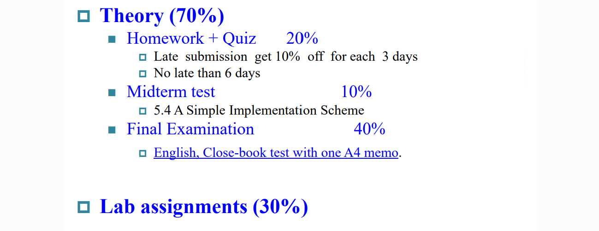
Chapter 1: Introduction
0. 历史
-
第一台可编程电子计算机：ENIAC
-
10进制
-
通过开关编程
-
无存储部分
-
-
冯·诺伊曼的计算机设计理论——五个基本部分 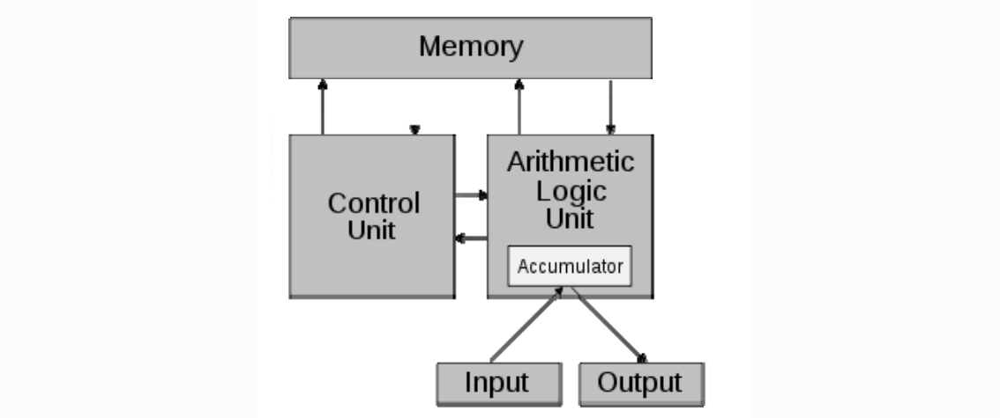
-
得到EDSAC——有存储部分的计算机
几代计算机的演变：
-
1~4代：真空管->晶体管->集成电路->大规模集成电路
-
第5代：
-
最新：
-
RISC：精简指令集计算机——CPU处理简单
-
RISC-5
-
MIPS
-
-
CISC：复杂指令集计算机——指令条数少
-
80x86
-
1. 介绍
-
发展进展——摩尔定律
-
应用
-
手机
-
万维网
-
......
-
2. Eight Great Ideas
-
摩尔定律
-
抽象化 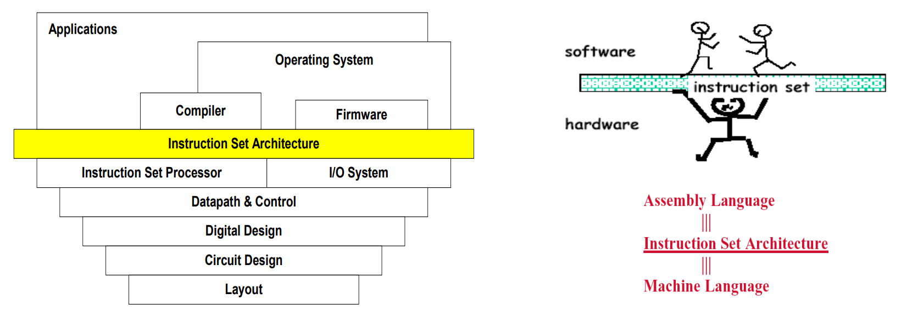
-
Make common case fast
-
......
-
层次存储——又大又快
-
可靠性——备份
4. 硬件系统
-
显示
-
主板
-
CPU里：
-
DataPath
-
Control
-
cache memory ——SRAM静态存储，造价高
-
-
Memory
-
Network
6. Performence
-
Response time：完成一个task需要的时间
-
Throughput：单位时间完成的任务数
-
“X is n time faster than Y”： Y 所用时间是 X 的 n 倍
-
CPU time = 时钟周期数 $\times$ 一个周期长度
-
将一个指令分成几个部分，每个部分一个周期(CPI = Cycle per Instruction)
-
则
$$ CPU\ time = 指令数 \times CPI \times 一个周期长度 $$
$$ = \frac{指令数 \times CPI}{时钟频率} $$
7. 不可能的性能提升
-
Power Wall：提升性能耗能巨大，温度高
-
Memory Wall：二层缓冲区L2 cache变大、表现变差；CPU比内存快得多
-
ILP Wall：难以并行处理
8. Multiprocessors
-
硬件上的并行：多核
-
Amdahl's Law: $$ T_{improved}=\frac{T_{affected}}{improvement \ t \ factor}+T_{unaffected} $$
-
make common cases fast
-
-
MIPS as a Performance Metric
-
millions of instructions per second
-
不能精确反映CPU性能
-
因为指令所占周期数不同
-
assignment:1-1, 1-2, 1-4, 1-6, 1-7, 1-14
Chapter 3: Arithmetic for Computer
3.1 Introduction
-
读、写内存：
-
lw, sw: load word, 读取32位长度的内存
-
ld, sd: load double word, 64位
-
lb, sb: load byte, 一个字节
-
根据起始地址读取不同长度的内容
-
-
ALU相关：
- slt x1 x2,x3: set if less than, x1=(x2<x3)
-
分支跳转指令：
- beq, bne, jal: 有条件/无条件跳转
3.2 Possible representation
已经了解的1's、2's数略
-
2's Biased notation
-
$= 2's complement + 2^n$
-
最小：$-2^n$，表示为000000000000···
-
最大：$2^n$，11111111111····
-
便于比较大小（相当于无符号数）
-
3.3 Arithmetic
-
Overflow：溢出判断
-
$V = C_n \oplus C_{n-1}$
-
符号位是否进位、最高数值位是否进位
-
3.4 Multiplication
由移位和加法组成
-
为方便说明，竖式上方的是被乘数，下方是乘数
-
乘数是1：被乘数移位、加到结果中
-
乘数是0：被乘数移位、add 0 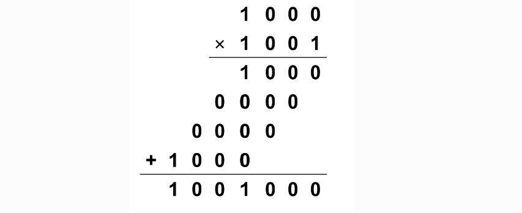 $4\times 4$ =>8位加法器
-
大且慢：$64\times64$=>128位加法器用64次
改进：
-
不移被乘数，而是右移基（得数），因为低位不参与后续运算
-
加法器位数减半 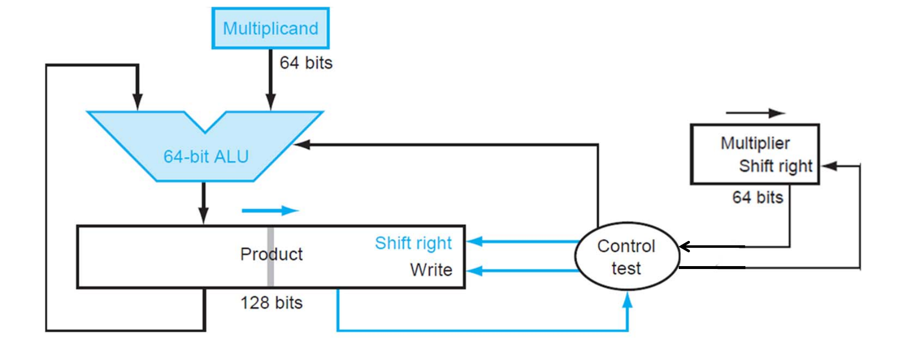
进一步：将乘数放在基中 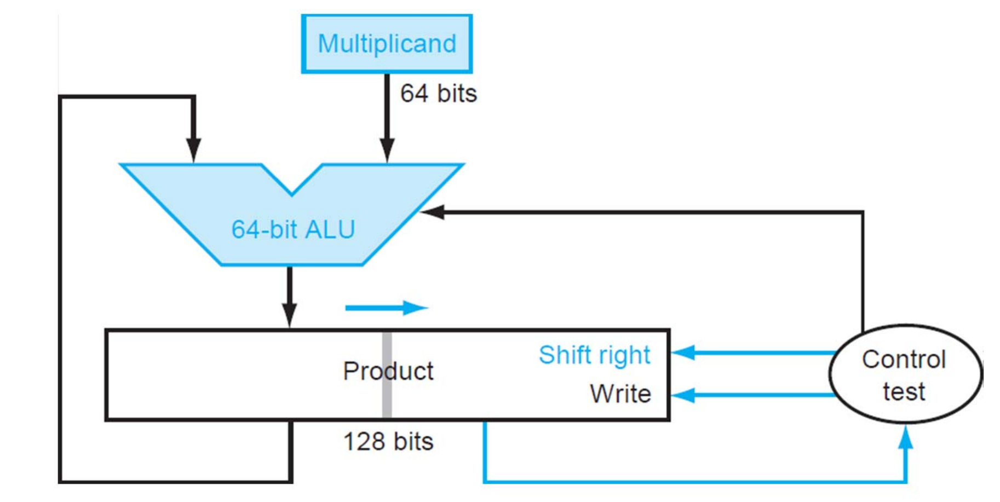
乘法不能用补码
-
有符号数的乘法
-
将符号保存
-
转换为绝对值
-
同号为正，异号为负
-
Booth's Algorithm ？
- 不太懂这个，放几张图，不考就不解释了 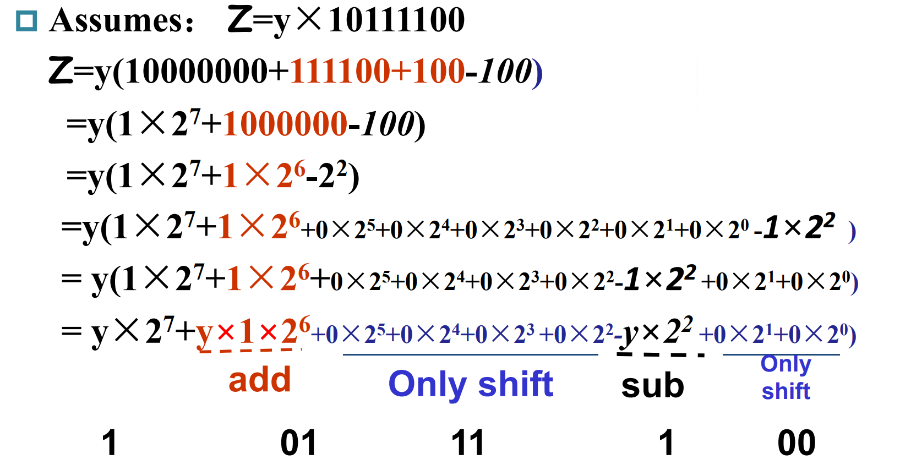 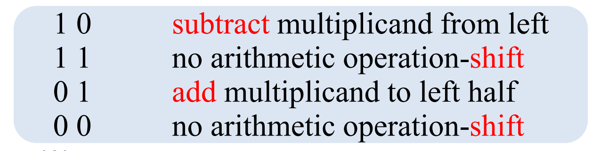
- 默认$C_{-1}$=0 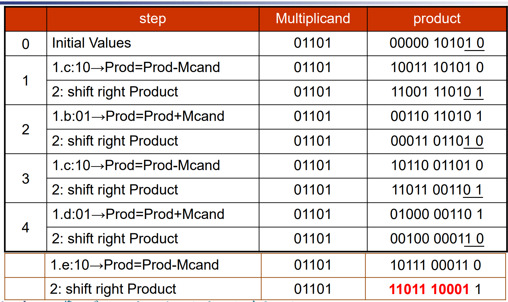
另一种方法： 用多个ALU并行实现
3.5 Divide
除法实现基本思想：
-
将被除数每次左移，减掉除数
-
如果结果大于等于0，则有效，在商上加一个1
-
否则无效，将除数加回去，在商上加一个0
-
需要迭代65次（64位） 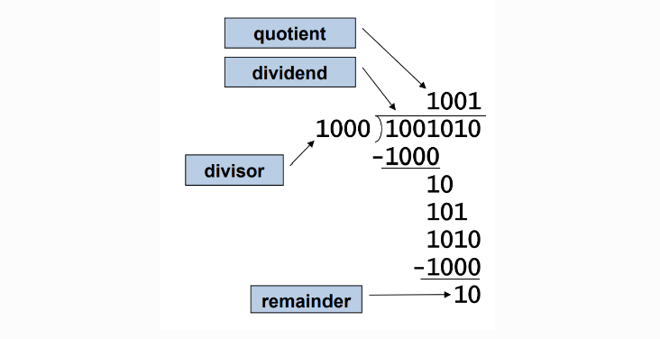 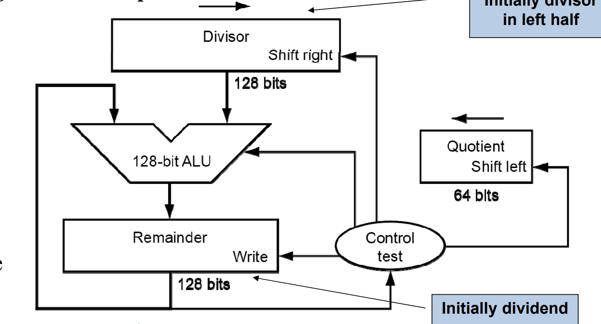
具体实现：
除数放在高位，被除数放在低位，每次右移除数 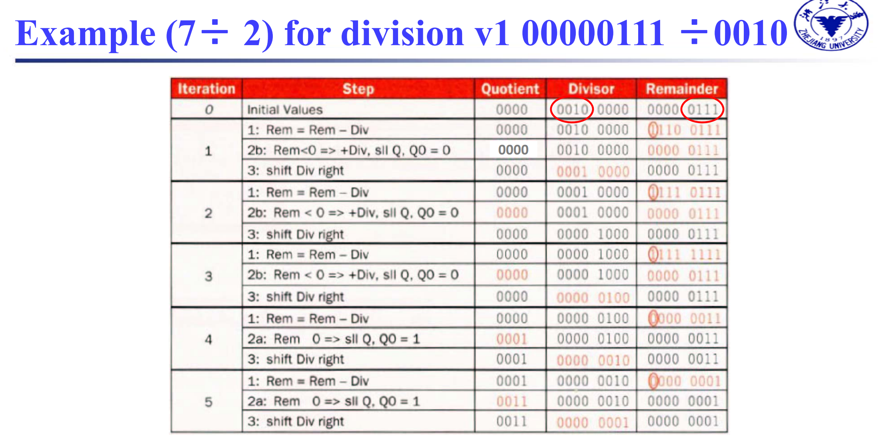
改进：可以节省空间。
将被除数左移，移出来的位置放商，高位减剩下来的是余数，会多移一位。因此最后要把高位右移一位 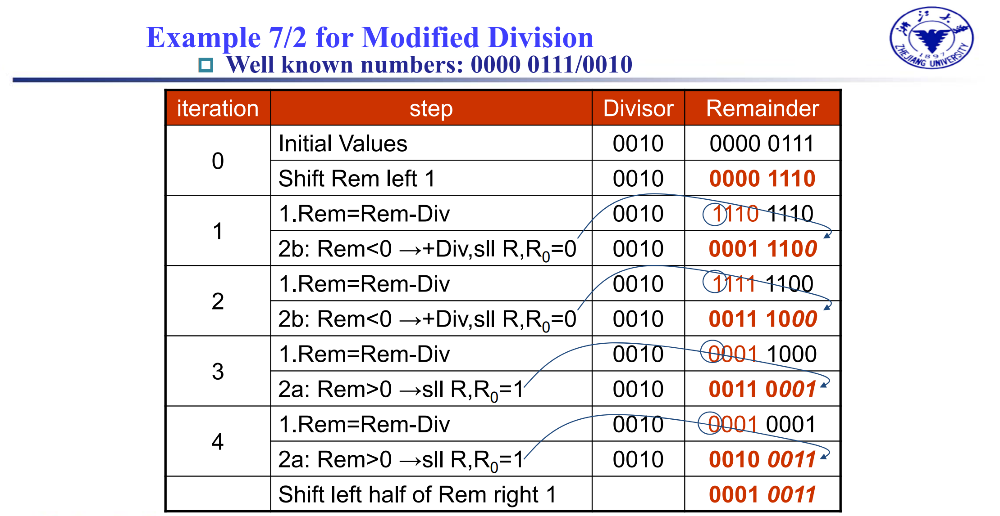
-
符号约定：余数和被除数符号一致
-
软件检查除数是否为0（处理器不管）
3.6 Float
-
Bias: single——127, double——1023
-
1是隐含的（科学计数法）
例：$15=1111=1.111\times2^3$
float: 0 10000010 111000...
(Exponet = 3+127 = 130)
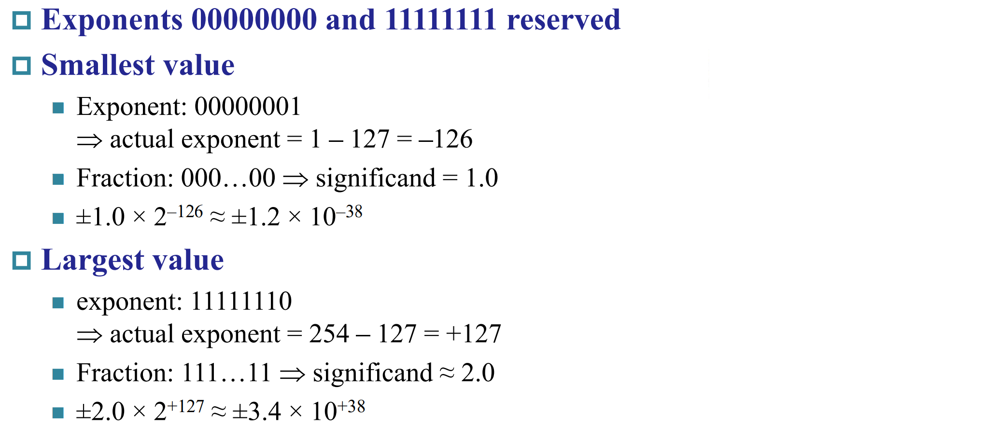 大约相当于6位十进制小数精度 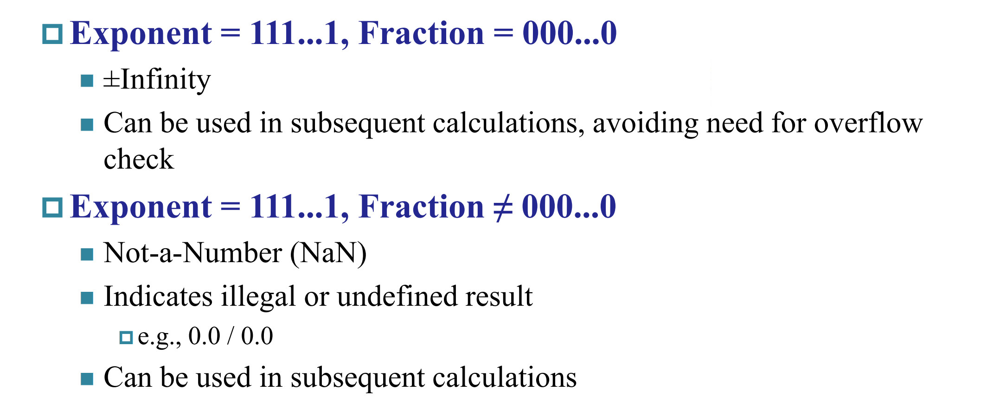
-
Exponent=00...0——隐含的首位是0
-
0 00...0 00...0 =
如何进行运算：
-
加法
-
Alignment（对齐）
-
The proper digits have to be added（小的往大的靠）
-
Addition of significands
-
Normalization of the result（归一化）
-
Rounding（舍入，可能需要重新归一化）
-
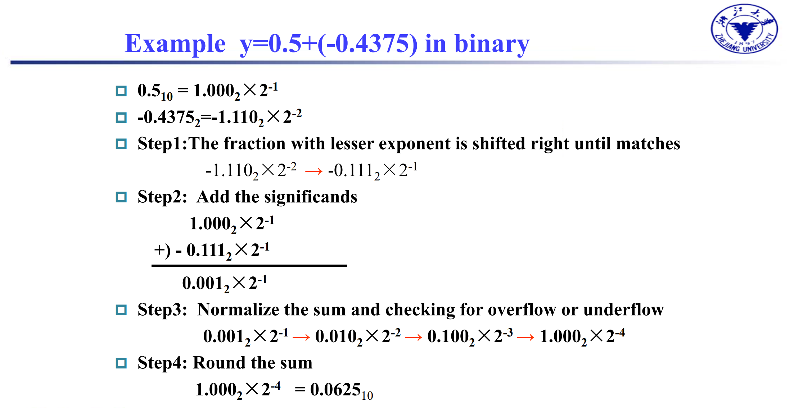
- 乘法：
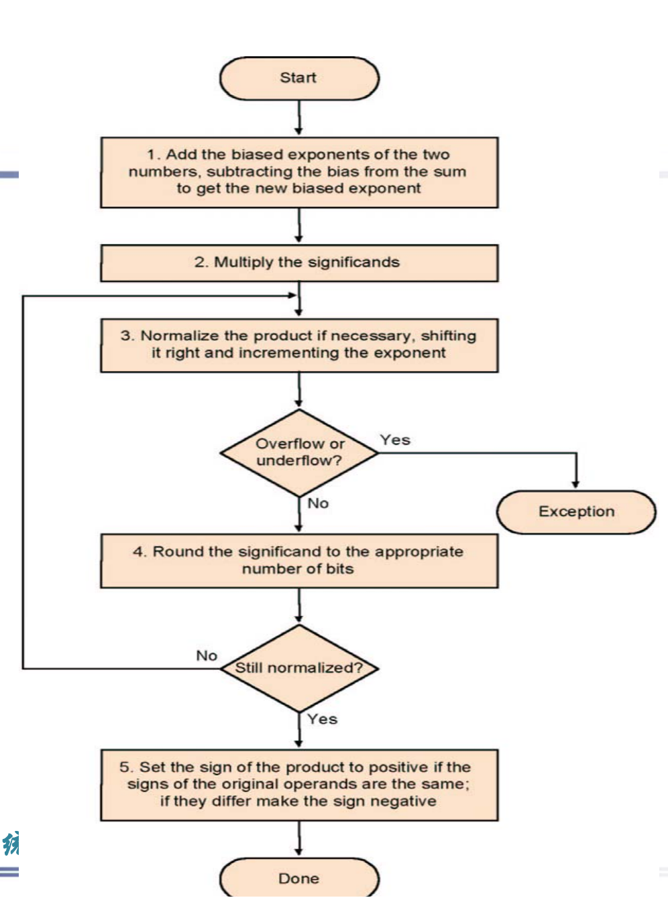
- 指数相加，还要减去127（bias） 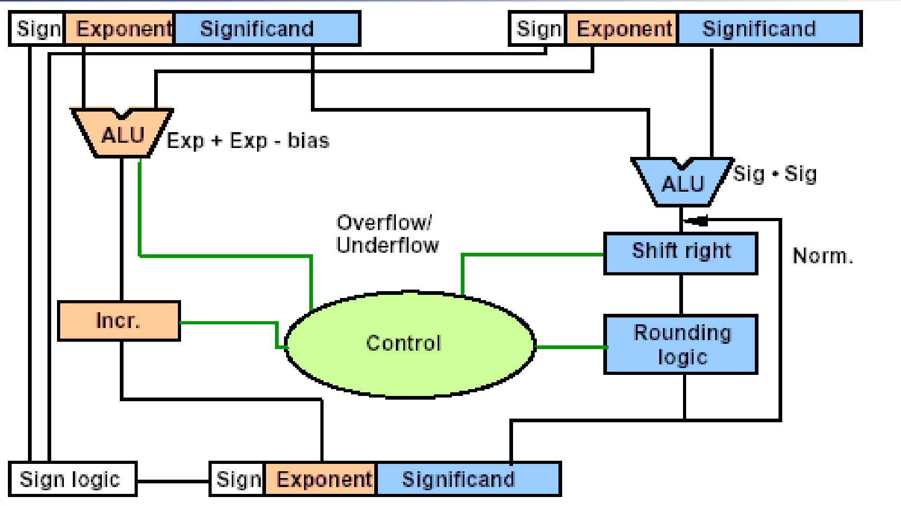
Accurate Arithmeticd
-
为提升精度，最多加三位(guard, round, sticky)
-
guard位和round：在运算过程中多保留两位
-
sticky位：在结果位的右边如有不为0的bit，则为1
- 可以分辨0.500000...0和0.500000...1
-
round方式是可选的